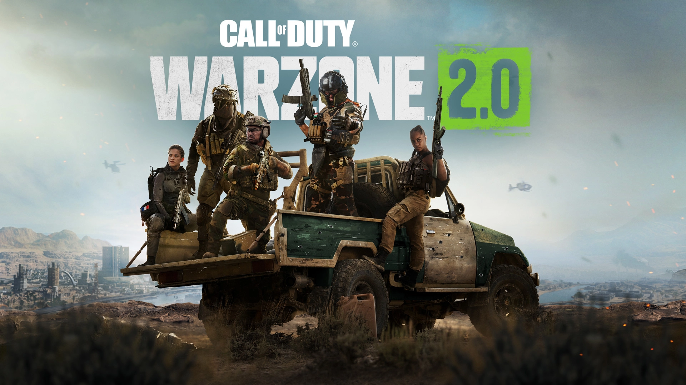

Warzon 2 Tips and Tricks. How to improve your gameplay.
Need some guidance on how to get better in battle royale? We’ve got you covered with top tips.
Warzone2.0, part of the Callofduty: Modern Warface 2 online game released in 2022, is full of tips and tricks that can make you a top player on the field. Learning how to effectively utilize cover, keep an eye on your radar, use Warzone's loadout system and move quickly will help ensure success. It is also important to be aware of your surroundings and pick up special weapons like juggernaut suits and perks such as increased health regeneration or higher accuracy with specific guns. Utilizing quick strategies like finding good hiding spots or setting traps for opponents helps in dominating the Warzone2.0 battlefield, while being able to recognize sound cues like incoming airstrikes or reinforcements can also give players an edge over their opponents. So if you are looking to become a Warzone2.0 master, learning these ten essential tips and tricks will prepare you for battle!
-
Landing spot
The best Warzone 2 landing spot will depend on what kind of strategy you're looking to employ, whether it be aggressive or defensive. There are some areas in Warzone 2 that tend to be better spots than others though, such as Zaya Observatory, Al Mazrah City, Ahkdar Village, Zarqwa Hydroelectric. -
Pop and cut
Warzone2.0 offers players plenty of ways to customize their experience and one of those is the ability to “pop and cut” their chute to drop more quickly. When a player pops their chute, it helps them avoid getting killed too close to the ground when they deploy from the plane. After that, at any point in the descent, they can then quickly cut the chute so they descend faster, although with greater risk of taking damage. Knowing when to pop and cut is essential for Warzone2.0 players looking make an impact on the battlefield as soon as possible! -
Spend your money
Warzone 2.0 has a cash economy at its heart, where players can collect money as they play and even earn more by completing in-game contracts. Instead of hoarding the cash however, it is best used at Buy Stations which are marked on your map. These allow players to purchase killstreaks such as Precision Airtsrikes or Mortar Strikes, weapons, and armor plating for a better chance of success in battleRoyale. Our advice is to not keep the cash too long since it cannot be taken with you, but instead use it proactively to purchase useful rewards that can boost your chances in the Warzone 2.0 world. -
Get your loadout
Warzone 2.0 has definitely made a name for itself as one of the most challenging battle royales out there. When playing Warzone, having cash is important, but it's worth knowing what priority to set when hitting up a buy station. Killstreaks can be incredibly helpful, but one should make kitting yourself out with primary weapons your top priority. These are custom guns that you can buy once at a time, and lots of experienced Warzone players use this method to dominate their opponents. It's definitely worth following suit if possible! Loadout drops have been re-introduced to Warzone, however they cost an expensive $8,000 per player in your squad, so unless you absolutely need them, it might not be worth the splurge each time. You can also get your loadout through an airdrop depending on your luck. Knowing what to prioritize when playing Warzone 2.0 will ultimately be key in gaining that Warzone victory you've been working towards! -
Setting
Warzone 2.0 has some great features that allow you to customize the settings to fit your playing style. Whether you're on a PC or console, tweaking your settings can help you get better results in Warzone 2.0. Make sure the controller or mouse sensitivity feels good for you and turn on an ADS multiplier - this feature adjusts the sensitivity depending on how zoomed in you are with your weapon's sites. Turning off all in-game music is another suggestion as it can be disruptive and obstruct important audio like footsteps during endgame circles, allowing for total focus and possibly a better outcome. -
Pick up contracts
Warzone2.0 contracts are an essential part of your Warzone experience, as they give you the opportunity to earn rewards such as cash and loot while also helping to increase your K/D ratio. Bounties are a great way to test your combat skills and can net you some useful items if you do them successfully, while Safecracker contracts involve finding a Field Upgrade around the Warzone map. Secure Intel contracts have you grabbing intel from enemy officers on the Warzone map and using it to your advantage. Finally, Most Wanted contracts require you to defeat an enemy team leader and steal their equipment, adding bonus loot to your inventory in return. With these various types of contracts available in Warzone2.0, make sure you playthrough frequently so that you can pick up contracts whenever possible and make the most out of Warzone2.0! -
Play as a team
Warzone2.0 is more fun when teams work together and keep an eye out for their squadmates. We encourage grouping up, using strategy, and utilizing everyone’s resources. If you have full armor, but can spare a few plates for your team, don’t hesitate to drop them so that others can pick them up. Working together means improved chances of survival for all. So never forget: share your resources with the ones around you! -
Communication is key
Warzone 2.0 is no exception when it comes to modern battle royale game's, as it also includes a handy ping system to offer some effective communication between squad mates. Its use is easy and highly encouranged; all you need to do is map it onto a single button and viola - use the ping system whenever you can! Your comrades will be grateful for every bit of information, so share often and help make your squad excel in Warzone 2.0. -
Pick up everything
Warzone2.0 is highly replayable, thanks to the robust array of equipment available throughout the map. If you want to get creative with your approach, why not deploy a piece of cover or use Dead Silence field upgrade to make yourself quiet? These tools can give you the tactical advantage that may just help you turn the tides in a fight. Experimenting with Warzone2.0's various equipment options gives players an edge that can make a huge difference in their end results - so get creative and have fun! -
Don't leave when you die
Warzone2.0 has revolutionized the idea of death in battle - if you die, it's not the end of the game. As long as you didn't die right at the end, when you are killed, you will be sent to the Gulag, a unique prison situated underground. In this mineshaft you will have time to prepare for an intense two-on-two gunfight with victors earning their returned entry onto the battlefield. If your team is particularly generous and lucky enough to have enough money, they can even pay for your return ticket back onto Warzone2.0! Exploit this unique Warzone feature by perfecting your combat skills in the Gulag and take those newfound strategies into battle! -
Be aware
Warzone 2.0's Battle Royale mode has a feature that players should be aware of - the signal flare. Whether you're starting to broadcast at an Intel contract point or buying back a squadmate, make sure to keep an eye out for any flares in the sky. Starting to broadcast sends up a white flare, while buying back a squadmate shows up as a red one - both visible to anyone looking in their vicinity. Being aware of these flares can give you an edge against your opponents, so it's important to watch out for them at all times! -
Don't be afraid
Warzone2.0 has become a popular way to test your tactical prowess in the heat of battle. One powerful tactic is hugging the outside of the gas ring as it closes, allowing you to pick off any fleeing targets and take out an opponent team with ease. To do this effectively however, a gas mask is needed – and while the mask's animation issues are slowly being resolved, you better make sure you're aware of them before entering the endgame! Warzone2.0 has made remaining alive until the end a viable strategy – just make sure that that gas mask doesn't lead to your own doom. -
Events
Warzone 2.0 had removed many of the unique in-match events that Warzone 1.0 had, which undoubtedly left players with an overall disappointing experience. Though there are still a few events that players can look out for during the Warzone matches, they seem to pale in comparison to those available before. Players should be cautious and try not to get too comfortable with their strategies as any one of these occurring could completely change the tone of the match - whether it is Nuclear Attack or supplies dropping from a Warbird flyover, it always brings excitement and challenge as opponents must strategize fast if they want to win the Warzone match. -
Beyond limits
Warzone2.0 has opened up a world of possibility for gamers, allowing them to make use of larger backpacks and unrestricted item selection. This means players are able to store a variety of equipment without having to worry about the restrictions from Warzone1 - you can easily fit 12-15 armour plates, multiple Self Revive packs, several Gas Masks and even a 3rd weapon into your pack. Warzone2.0 also provides an extra level of immersion as you can make use of the environment around you - scavenge around abandoned buildings and containers to find the items that could help turn the tide in battle!
Footage from the game.

Download for Free.
You can play Warzon 2.0 for free !
Recommended Specifications
OS: Windows 10 64 Bit (latest update) or Windows 11 64 Bit (latest update)
CPU: Intel Core i5-6600K / Core i7-4770 or AMD Ryzen 5 1400.
RAM: 12 GB.
Hi-Rez Assets Cache: Up to 32 GB.
Video Card: NVIDIA GeForce GTX 1060 or AMD Radeon RX 580.
Video Memory: 4 GB.